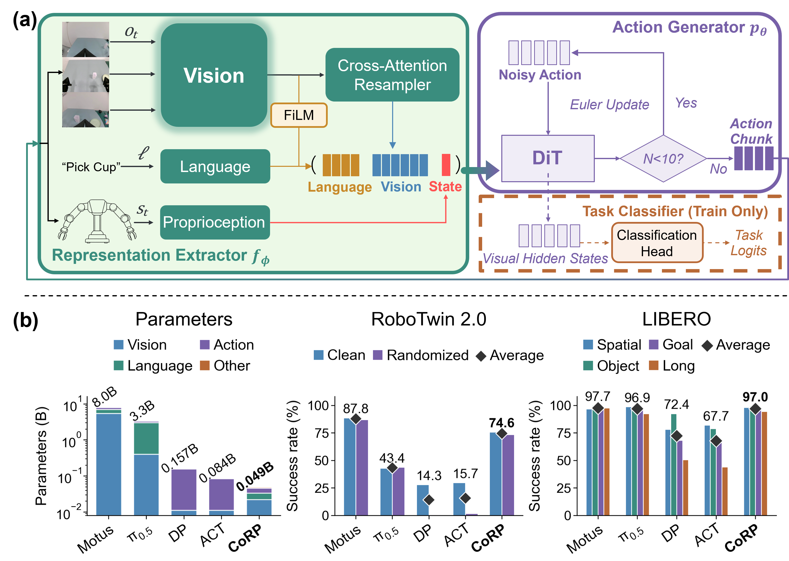
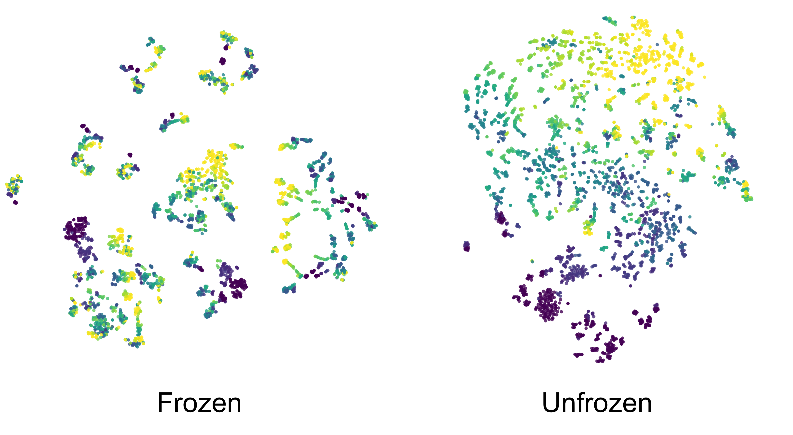
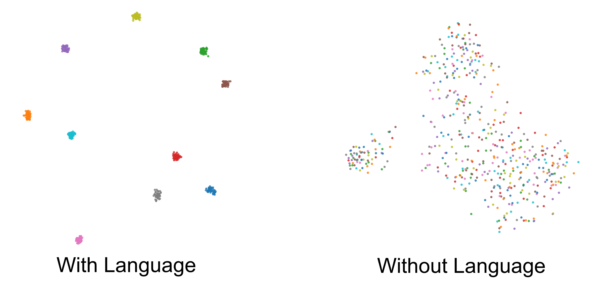

Compressed Representation Policy · 48.9M parameters · no vision-language model · no video-generative prior
- Compressed Representation Policy (CoRP), a 48.9M-parameter policy without any VLM or video-generative prior that is competitive with systems up to 163× larger on LIBERO and RoboTwin 2.0, and serves as a controlled testbed for isolating the role of representation.
- A controlled ablation study that varies encoder initialization, fine-tuning, token compression, and language conditioning one at a time, showing that effective compact policies require visual representations that are pretrained, task-adapted, and compressed, and that language helps only when the goal is visually ambiguous.
- Real-robot validation on three bimanual tasks (closed-loop adaptation to object displacement, coordinated two-arm placement, and precision plug insertion), providing qualitative evidence that CoRP, pretrained on our large-scale real-world corpus, transfers to physical hardware.
LIBERO
Four suites in one grid. The arrows step through the tasks in that suite.
LIBERO-Spatial
LIBERO-Object
LIBERO-Goal
LIBERO-Long
RoboTwin 2.0
One successful rollout per task. The arrows move to the next task. Left, head, and right play together in the same row.
Clean
Randomized
Same tasks, with clutter and changes to background, lighting, and table height.
Peg Insertion
An 8.0 mm peg into an 8.1 mm hole. In simulation, CoRP reaches 90% success. These are success clips from training variants of that task. Use the arrows to move between them.
The policy, after pretraining on more than 10,000 hours and 5,887 tasks. Each clip is left, head, and right. The policy runs at about 20 ms per chunk.
Pick cup
Place spoon
Plug insertion

CoRP. (a) The representation extractor, built from DINOv2, T5, and an MLP, outputs the conditioning sequence zt. A one-block flow-matching action generator turns that sequence into an action chunk. (b) CoRP stays competitive with much larger systems at 0.049B parameters.
Multi-task manipulation policies differ in architecture, scale, and pretrained priors all at once, so published comparisons cannot attribute performance to any single component. We argue that most of it comes from the visual representation, and that parameter scale and generative priors are largely incidental.
To test this, we build CoRP (Compressed Representation Policy), a deliberately compact policy (48.9M parameters, no vision-language model and no video-generative prior) that factorizes into a representation extractor and a flow-matching action generator. It reaches 97.0% on LIBERO and 75.78% / 73.36% on RoboTwin 2.0 Clean / Randomized, matching systems 40.9–163.6× larger.
Holding the action generator fixed, we then vary one extractor property at a time. Pretrained initialization is decisive: a random ViT-S/14 drops to 78.1% and an ImageNet ResNet-34 to 74.5% on LIBERO. Pretraining alone is not enough, as freezing the encoder costs 19.8 points. Compression matters as much: resampling each view to 48 tokens beats passing all patch tokens (97.0% vs 83.2%), and a variational information bottleneck over those tokens is worse than a hard token budget, cutting LIBERO-Goal from 95.8% to 33.0% by suppressing the instruction-dependent token selection the policy relies on. Language conditioning contributes only where the observation leaves the goal ambiguous (LIBERO-Goal: 9.2% to 95.8%), while on RoboTwin 2.0, where observations are unambiguous, removing it slightly improves success.
A compact policy works when its representation is pretrained, task-adapted, and compressed.
Can a compact policy match much larger systems?
Yes. On LIBERO the default CoRP (0.049B) reaches 97.0%, 5.9 points above ProgVLA, the strongest compact policy in the comparison that also uses neither a VLM nor a video prior. A wider or deeper variant goes further: 93.9% at d = 180 (0.037B) and 98.4% at L = 3 (0.063B). All ablations below use the one-block default.
| Method | Params (B) | Spatial | Object | Goal | Long | Avg. |
|---|---|---|---|---|---|---|
| With a vision-language model | ||||||
| SmolVLA | 2.25 | 93.0 | 94.0 | 91.0 | 77.0 | 88.8 |
| π0 | 3.3 | 96.8 | 98.8 | 95.8 | 85.2 | 94.1 |
| π0.5 | 3.3 | 98.8 | 98.2 | 98.0 | 92.4 | 96.9 |
| OpenVLA | 7.0 | 84.7 | 88.4 | 79.2 | 53.7 | 76.5 |
| OpenVLA-OFT | 7.0 | 97.6 | 98.4 | 97.9 | 94.5 | 97.1 |
| With a video generation model | ||||||
| Cosmos-Policy | 2.0 | 98.1 | 100.0 | 98.2 | 97.6 | 98.5 |
| Fast-WAM-Joint | 6.0 | 99.6 | 99.4 | 98.2 | 96.8 | 98.5 |
| Motus | 8.0 | 96.8 | 99.8 | 96.6 | 97.6 | 97.7 |
| Without either prior | ||||||
| ACT | 0.084 | 82.0 | 78.8 | 66.1 | 44.0 | 67.7 |
| Diffusion Policy | 0.157 | 78.3 | 92.5 | 68.3 | 50.5 | 72.4 |
| Octo | 0.093 | 78.9 | 85.7 | 84.6 | 51.1 | 75.1 |
| ProgVLA | 0.109 | 87.6 | 96.0 | 92.0 | 88.6 | 91.1 |
| CoRP (L=1, d=180) | 0.037 | 97.6 | 99.4 | 93.2 | 85.4 | 93.9 |
| CoRP (L=1, d=768, default) | 0.049 | 98.2 | 99.4 | 95.8 | 94.4 | 97.0 |
| CoRP (L=3, d=768) | 0.063 | 98.2 | 99.6 | 98.8 | 97.0 | 98.4 |
Success rate (%) on LIBERO. 50 trials per task.
On RoboTwin 2.0, CoRP (75.8% / 73.4%) outperforms X-VLA and π0.5 and approaches Motus trained without its video pretraining (77.6% / 77.0). It stays below video-pretrained Motus and GigaWorld-Policy. Diffusion Policy and ACT, which learn a visual encoder without a large-scale pretrained vision model, collapse under randomization (0.6% and 1.7%). CoRP loses 2.4 points.
| Method | Params (B) | Clean | Randomized |
|---|---|---|---|
| With a vision-language model | |||
| X-VLA | 0.9 | 72.9 | 72.8 |
| π0 | 3.3 | 46.4 | 16.3 |
| π0.5 | 3.3 | 43.0 | 43.8 |
| With a video generation model | |||
| Motus | 8.0 | 88.7 | 87.0 |
| Motus, without pretraining | 8.0 | 77.6 | 77.0 |
| GigaWorld-Policy | 11.4 | 86.4 | 85.0 |
| Without either prior | |||
| ACT | 0.084 | 29.7 | 1.7 |
| Diffusion Policy | 0.157 | 28.0 | 0.6 |
| CoRP | 0.049 | 75.8 | 73.4 |
Success rate (%) on RoboTwin 2.0. 100 trials per task, averaged over 50 tasks.
Does a pretrained visual encoder help?
Yes. A DINOv2-initialized ViT-S/14 beats every other encoder variant by at least 14.9 points on average LIBERO success. Neither factor is enough on its own: with random initialization the ViT is no better than the ResNet (78.1% vs 82.1%), and ImageNet pretraining does not help the ResNet (74.5% vs 82.1%). All four variants identify the task at 100% accuracy. The pretrained ResNet still only reaches 37.0% on LIBERO-Goal: the policy knows the task and lacks the visual detail to carry it out.
| Encoder | Spatial | Object | Goal | Long | Avg. | NMAE | R² |
|---|---|---|---|---|---|---|---|
| Random ResNet-34 | 91.2 | 97.8 | 72.8 | 66.6 | 82.1 | 0.12 | 0.54 |
| ImageNet ResNet-34 | 85.4 | 98.8 | 37.0 | 76.8 | 74.5 | 0.09 | 0.73 |
| Random ViT-S/14 | 84.4 | 95.6 | 86.0 | 46.4 | 78.1 | 0.11 | 0.59 |
| DINOv2 ViT-S/14 | 98.2 | 99.4 | 95.8 | 94.4 | 97.0 | 0.07 | 0.81 |
LIBERO success (%). NMAE and R² are from a frozen probe that predicts the action chunk from the visual prefix. Lower NMAE and higher R² mean a more action-informative representation.
Is pretraining enough without adaptation?

t-SNE of the visual prefix, frozen versus fine-tuned. A frozen DINOv2 encoder leaves a less useful representation for control.
No. Freezing the pretrained encoder drops average LIBERO success from 97.0% to 77.2%, no better than a randomly initialized ViT trained end to end (78.1%). The probe agrees: freezing cuts R² from 0.81 to 0.24 and roughly doubles NMAE, from 0.07 to 0.16.
| Visual encoder | Average | NMAE | R² |
|---|---|---|---|
| Frozen DINOv2 | 77.2 | 0.16 | 0.24 |
| Fine-tuned | 97.0 | 0.07 | 0.81 |
When does language conditioning help?

t-SNE of the visual prefix with and without language. Without the instruction, Goal tasks collapse together. Spatial tasks stay mostly separable.
Language is a disambiguator, not a general source of task knowledge. On LIBERO-Goal, where one scene is shared across instructions, removing language drops success from 95.8% to 9.2%, near the 10% chance level of a 10-task suite. The other suites lose at most 11.2 points. On RoboTwin 2.0, where the scene identifies the task, removing language raises success from 75.8% to 78.5% (Clean) and from 73.4% to 76.1% (Randomized).
| LIBERO | Spatial | Object | Goal | Long | Average | |||||
|---|---|---|---|---|---|---|---|---|---|---|
| Acc. | S.R. | Acc. | S.R. | Acc. | S.R. | Acc. | S.R. | Acc. | S.R. | |
| Without language | 90.4 | 87.0 | 100.0 | 100.0 | 8.6 | 9.2 | 89.0 | 83.4 | 72.0 | 69.9 |
| With language | 100.0 | 98.2 | 100.0 | 99.4 | 100.0 | 95.8 | 100.0 | 94.4 | 100.0 | 97.0 |
Acc. is first-frame task-head accuracy. S.R. is success rate.
| RoboTwin 2.0 | Clean | Randomized | ||
|---|---|---|---|---|
| Acc. | S.R. | Acc. | S.R. | |
| Without language | 99.96 | 78.50 | 99.92 | 76.06 |
| With language | 99.78 | 75.78 | 99.58 | 73.36 |
Does the information bottleneck help?
A hard token budget does. Passing every patch token scores 83.2%. Resampling each view to 48 instruction-conditioned tokens scores 97.0%. The gain is concentrated on LIBERO-Goal (55.8% to 95.8%), the suite where the instruction alone specifies the goal. Swapping the instruction while holding the observation fixed changes the resampled visual prefix by 49.7%, and the all-token prefix by only 5.4%.
A variational bottleneck does the opposite. It compresses every token toward the same prior, regardless of what the current instruction needs. On the resampled prefix it cuts the instruction-induced change from 49.7% to 13.6% and Goal success from 95.8% to 33.0%. All-tokens plus VIB still names the Goal task at 99.9% accuracy and succeeds only 33.6% of the time.
| Spatial | Object | Goal | Long | Average | ||||||
|---|---|---|---|---|---|---|---|---|---|---|
| Method | Acc. | S.R. | Acc. | S.R. | Acc. | S.R. | Acc. | S.R. | Acc. | S.R. |
| All tokens | 93.8 | 89.6 | 100.0 | 99.6 | 91.4 | 55.8 | 100.0 | 87.6 | 96.3 | 83.2 |
| All tokens + VIB | 99.8 | 87.8 | 100.0 | 99.4 | 99.9 | 33.6 | 100.0 | 90.2 | 99.9 | 77.8 |
| 48 tokens | 100.0 | 98.2 | 100.0 | 99.4 | 100.0 | 95.8 | 100.0 | 94.4 | 100.0 | 97.0 |
| 48 tokens + VIB | 91.6 | 87.8 | 99.9 | 99.2 | 69.6 | 33.0 | 95.5 | 83.6 | 89.2 | 75.9 |
CoRP is a 48.9M-parameter policy with an ordinary flow-matching action generator and no VLM or video prior. On these closed-set benchmarks it matches systems up to 163× larger, and the same compact design transfers to a real bimanual robot. Across the ablations, weaker variants still recognize the task and fail to perform it. What they lack is fine-grained, instruction-specific visual detail.
The study measures in-distribution control. It does not test the open-world semantic and physical generalization that VLAs and world-action models are built for. Whether a pretrained, task-adapted, compressed representation is enough in that regime is open.
@inproceedings{corp2027,
title = {Compact Robot Policies Need Fine-Grained Visual Representations},
author = {Anonymous},
booktitle = {Under review at the International Conference on Learning Representations},
year = {2027},
url = {https://corp-policy.github.io/}
}